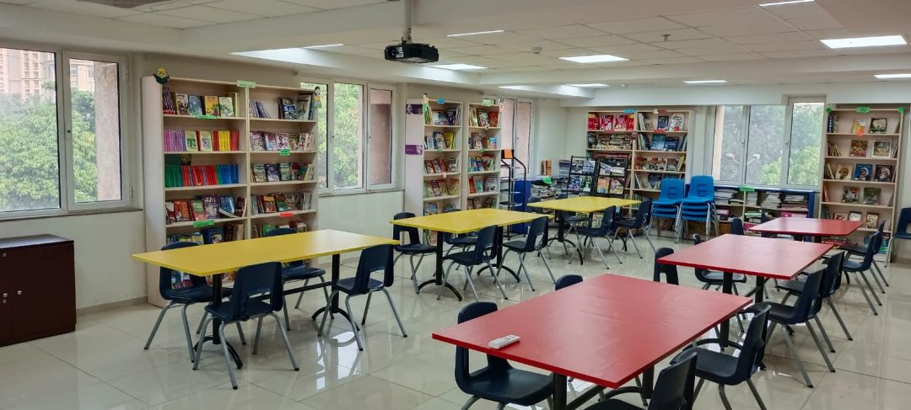
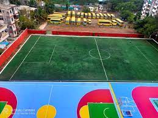

<html>
    <head><meta name="viewport" content="width=device-width, initial-scale=1">

        <link rel="stylesheet" href="https://maxcdn.bootstrapcdn.com/bootstrap/3.4.0/css/bootstrap.min.css">
        
        <script src="https://ajax.googleapis.com/ajax/libs/jquery/3.4.1/jquery.min.js"></script>
        
        <script src="https://maxcdn.bootstrapcdn.com/bootstrap/3.4.0/js/bootstrap.min.js"></script>
        
        <link rel="stylesheet" href="https://cdnjs.cloudflare.com/ajax/libs/font-awesome/4.7.0/css/font-awesome.min.css">
        
        <link rel="stylesheet" href="style.css">
        </head>
</html>
<body>
    
<nav class="navbar-inverse my_nav_bar">
    <div class="navbar-header">
        <button type="button" class="navbar-toggle" data-toggle="collapse" data-target="#myNavbar">
            <span class="icon-bar"></span>
            <span class="icon-bar"></span>
            <span class="icon-bar"></span>
        </button>
        <a class="navbar-brand" href="#">Podar International School</a>
    
    </div>
    
    
    <div class="collapse navbar-collapse" id="myNavbar">
    <ul class="nav navbar-nav">
        <li><a href="#campus_life">Campus life</a></li>
        <li><a href="#achievements">Achievements</a></li>
        <li><a href="#new">What's New</a></li>
        <li><a href="#contactUs">Contact Us</a></li>
        </ul>
    </div>
    </nav>


    <section id="campus_life">
        <iframe width="100%" height="500px" src="https://www.youtube.com/embed/dhO9GxzfOg0" title="Life at Podar International School | Podar Education Network" frameborder="0" allow="accelerometer; autoplay; clipboard-write; encrypted-media; gyroscope; picture-in-picture" allowfullscreen></iframe>
    </section>
</body>


<div class="container">
    <h2 class="page-header" id="campus_life" >Campus Life</h2>
<canter>
    <div class="travel_mainDiv">
        

         <h3 class="text-capitalize">
            <kbd>School Library</kbd>
         </h3>

         <hr>
         <h4 class="text-success text-capitalize">Was established on 1998</h4>
<p class="text-muted "> In our school library there are almost 4986 books.
    Some of them are related to mythology some are story based and most of them are related to subject and also for every class there is different section according to there reader's age.


</p> 
 
        </div>
</canter>


</div>


<br> <br>
<center>
    <div class="travel_mainDiv">
    

    <h3 class="text-capitalize"><kdb>school ground</kdb></h3>
   
<hr>
<h4 class="text-capitalize text-success" >is the identity of our school.</h4>
<P class="text-muted">In our ground there are many games to play like basketball, football, cricket, and many more.</P>

</div>
</center>


<br> <br>
<section id="achievements">
<h2 class="page-haeder" id="achievenents"> School Achievements</h2>

<div class="bg-primary movie_head "  data-toggle="collapse" data-target="#school_achievement1">
    Inter School Debate On Enviroment Pollution<i class="fa fa-sort-disk"></i>
</div> 
 <div id="school_achievement1" class="collapse">

<div class="achievement_text">
    
    <h5 class="text-sucess text-capitalize">won first prize in inter school debate on Enviroment Pollution
       
        <span class="glyphicon glyphicon-star"></span>  
        <span class="glyphicon glyphicon-star"></span>  
        <span class="glyphicon glyphicon-star"></span>  
        <span class="glyphicon glyphicon-star"></span>  
        <span class="glyphicon glyphicon-star"></span>  
    </h5>
    <P> it is a proud for our school to win this bebate competetion</P>
</div>

 </div>


 <div class="bg-primary movie_head "  data-toggle="collapse" data-target="#school_achievement2">
    Inter School Football Competition<i class="fa fa-sort-disk"></i>
</div> 
 <div id="school_achievement2" class="collapse">

<div class="achievement_text">
    
    <h5 class="text-sucess text-capitalize"> came second in inter school football competijtion
       
        <span class="glyphicon glyphicon-star"></span>  
        <span class="glyphicon glyphicon-star"></span>  
        <span class="glyphicon glyphicon-star"></span>  
        <span class="glyphicon glyphicon-star"></span>  
        <span class="glyphicon glyphicon-star"></span>  
    </h5>
    <P> it is a proud for our school to win this football competetion</P>

</div>

 </div>

 <div class="bg-primary movie_head "  data-toggle="collapse" data-target="#school_achievement3">
    Inter School Science Project Competition<i class="fa fa-sort-disk"></i>
</div> 
 <div id="school_achievement3" class="collapse">

<div class="achievement_text">
    
    <h5 class="text-sucess text-capitalize">won second prize in inter school science project
       
        <span class="glyphicon glyphicon-star"></span>  
        <span class="glyphicon glyphicon-star"></span>  
        <span class="glyphicon glyphicon-star"></span>  
        <span class="glyphicon glyphicon-star"></span>  
        <span class="glyphicon glyphicon-star"></span>  
    </h5>
    <P> it is a proud for our school to win this science project competetion</P>
</div>

 </div>
</section>


<h2 class="page-header" id="new">What's New</h2>

<ul class="list-group">
<li class="list-group-item list-group-item-success clo-lg-12 col-md-12 col-sm-12 col-xs-12 environment_li">
<H4>New School Canteen</H4>

<P class="list-group-item-text clo-lg-7 col-md-7 col-sm-7 col-xs-12">The food options and responsibilities to consider, canteens must be better organised and more efficient than they have been in the past. Online menus with photographs of the meals prepared, and detailed descriptions of their ingredients help both students and parents make the right nutritional choices. Each student or staff member who accesses the canteen could be provided with a School Canteen Account on the school website that keeps track of their previous meal choices and any dietary requirements they may have. Ordering online by ticking a box and paying for meals online can eliminate all the fuss of money handling, making it safer and less complicated for staff and students alike. Here again, diversity is the key.</p>
</li>
</ul>


<li class="list-group-item list-group-item-warning col-lg-12 col-md-12 col-sm-12 col-xs-12 environment li"> <h4>Implemented online Attendance Management System</h4>

     <p classe"list-group-item-text col-lg-7 col-md-7 col-sm-7 col-xs-12">1. Accuracy
    
    Humans are prone to error, even if we provide them with supporting computational devices. Automated attendance management systems ensure accurate time records and minimize the inevitable and costly errors with manual data entry. This accurate data thereby helps to provide accurate performance and payroll data.
    
    <br>
    
    2. Economics
    
    Have you ever thought that attendance management systems could control costs? It saves money by putting an end to inaccurate time reporting, buddy punching, absenteeism, tardiness, time abuse, and overpayment. As a matter of fact, a study done by the Axsium Group found that large organizations save up to $1,600 per employee after implementing automated attendance management systems.
    
    <br>
    
    3. Productivity / Efficiency
    
    Monitoring and managing attendance manually can be a time-consuming, laborious, and expensive affair. It takes time to process paper sheets and time cards, create schedules, authorize leave and overtime, and create payroll manually. Free up precious administration time with an automated system that does it all for you, from keeping track of employee hours to automatically importing information into your payroll system. The time and effort saved combined with data accuracy helps in optimizing the use of resources which lead to increased productivity and improves profits. And many more like visibility / Insights, Hassle Free Workflow Management, Flexibility, Integration / Configuration, Real-time tracking, Security, and Compliance
    
    </p> </li>

    <section id="contact">
        <iframe src="https://www.google.com/maps/embed?pb=!1m18!1m12!1m3!1d238130.11877536518!2d78.93242410447118!3d21.161028197938382!2m3!1f0!2f0!3f0!3m2!1i1024!2i768!4f13.1!3m3!1m2!1s0x3bd4c0a5a31faf13%3A0x19b37d06d0bb3e2b!2sNagpur%2C%20Maharashtra!5e0!3m2!1sen!2sin!4v1668098228128!5m2!1sen!2sin" width="600" height="450" style="border:0;" allowfullscreen="" loading="lazy" referrerpolicy="no-referrer-when-downgrade"></iframe>
    <hr>
    
    
    <h3>Principle Name</h3>
    <h4> xyz</h4>
 <div class="contact_1">

<a href="not tell you">
    <h5><i class="fa fa-envelop"></i>&nbsp;&nbsp;school@gmail.com</h5>
</a>

<a href="#">
    <h5><i class="fa fa-instagram"></i>&nbsp;&nbsp;school@gmail.com</h5>
</a>


 </div>   


</section>
</body>
